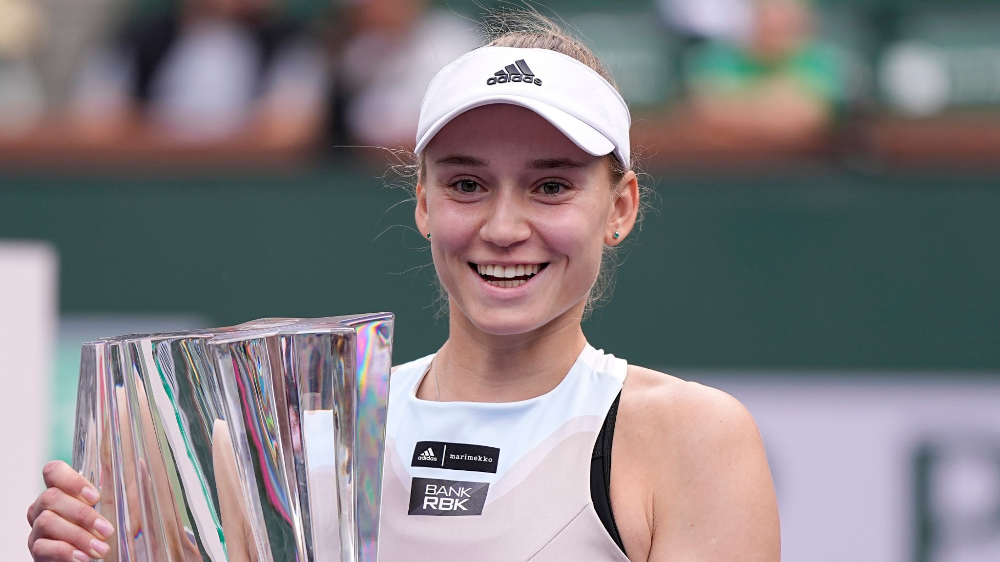

Ultimas novedades
-Noticias mas importantes del deporte mundial-
Rafa Nadal estará de baja deportiva cinco meses y no regresará hasta el año que viene

Rafael Nadal, que este sábado cumple 37 años, ha amanecido con la noticia dada por el galeno Marc Philippon, que supervisó la artroscopia efectuada ayer al tenista en la clínica Teknon de Barcelona. Nadal tendrá que estar cinco meses alejado de las pistas, ese es el tiempo calculado de baja deportiva. De esta forma se esfuma el deseo del tenista de participar en la Fase Final de la Copa Davis (21 al 26 de noviembre) en caso de que España se clasifique tras la fase de grupos de Valencia.
Sara Sorribes se clasifica para octavos de Roland Garros por indisposición de Rybakina: "No puedo respirar ni correr"

"No puedo estar más de 10 minutos en pista, no puedo respirar ni tampoco correr. Llevo dos noches sin dormir, con décimas de fiebre y dolor de cabeza. He intentado calentar para el partido, pero la mejor decisión es retirarme. El médico me ha dicho que se trata de un virus", explicaba Rybakina, la número cuatro mundial, finalista del Open de Australia y que llegó al 'Grand Slam' de la tierra con las credenciales de campeona de Roma.